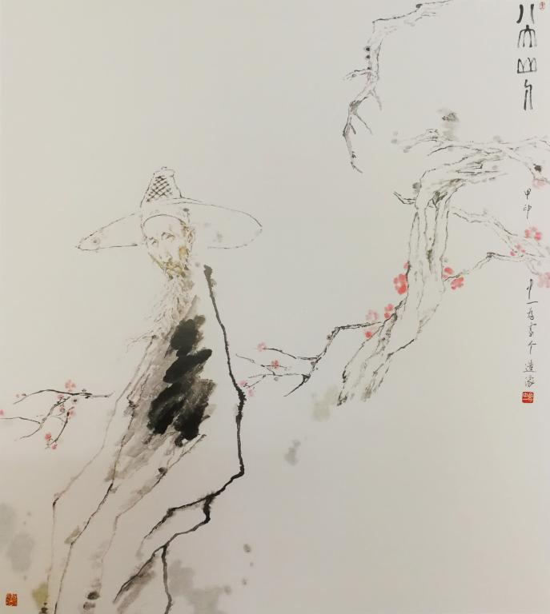
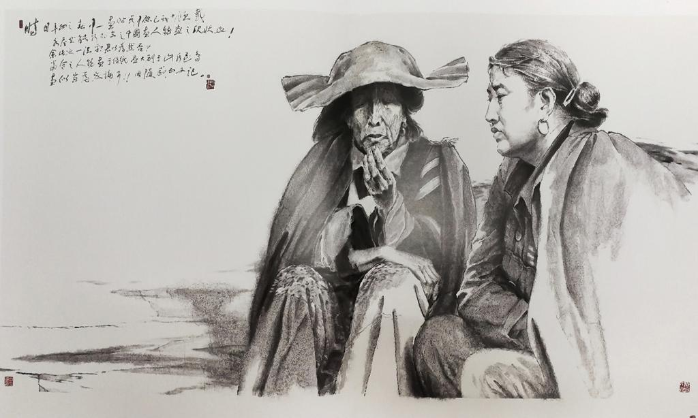

- 中共中央统一战线工作部
- 中共河南省委统战部
- 开封市统战部
- 河南大学
- "河大统战"杂志
丁中一：心中所爱，始终如一 发布时间：2020-04-09 16:09:02 作者：曹燕梅 杨孟儒 刘晓雯 一生热爱:“这种喜欢是骨子里的，来自心底最深处” 八大山人 116cm×130cm 2004年 抓紧机遇：“我们要跟紧时代的潮流” 时日 179cm×96cm 2011年 桃李满堂：“不断练习，不断进步” 与贾庆林主席在全国政协礼堂参观优秀画家进京展 河南情怀：“生于沪地，学于临安，留于中州。”

丁中一，男，1937年3月生于上海，1960年毕业于浙江美术学院（现中国美院）中国画系，同年赴河南工作至今。现为河南大学美术学院教授、硕士生导师，郑州大学特聘教授，中国美协会员，河南美协顾问、省文联委员、省文史馆馆员，河南省优秀专家。出席全国第七、八次文代会及全国第六次美术家代表大会。其中国画《八大山人》《虚谷先生》《青藤山人徐渭》分别入选全国第七、八、九届美展。其中《虚谷先生》获优秀奖，《青藤山人徐渭》被中国美术馆收藏。《石涛》入选“97全国中国画人物画展”，《冬心先生》入选“纪念毛主席延安文艺座谈会讲话发表60周年全国美展”。出版有《素描技法论要》和《丁中一西部写生画集》等。1993年以来，先后5次在台湾和德国举办个人画展，并得到高度评价。画作与论文曾在《美术》《国画家》《书与画》《美术界》《中国画》等刊物上发表和作专题介绍。
瘦高、白皙、略略驼背；浓软的沪腔、高度的近视镜、略显卷曲的头发、近乎童稚般天真清澈的笑容：世故不谙却时有精明闪现，天赋画才兼而勤奋异常，对艺术执著甚至执拗，诲人不倦至桃李满园－－这就是中国当代杰出的画家和艺术教育家丁中一先生。
走进丁老师的画室，只见一整面墙的书柜里都是各种各样密集堆砌的画册。除了画室，画册还“霸占”着客厅的各个角落，让人惊讶这到底是他的家还是画册储藏室。“太多了，我家里都放不下了，”丁老师用带着家乡口音的普通话不好意思地对记者说“还有好多，放在朋友家的地下室里。”
让画充盈自己的生活，与绘画相伴一生，是丁老师的选择，这个选择，他已经坚持七十余载。他说：“我还会继续画下去，直到我画不动了。”
“每天做同一件事难道不会觉得枯燥无趣吗？”对于这个太多人都会回答“肯定会”的问题，这位83岁高龄的老人眼神深处闪烁着坚定的光芒，毫不犹豫地说出与大多数人相反的答案——“当然不会”。他每天都在画，手中的笔从未停下，他告诉记者，从来都不需要什么东西支撑自己去画画，去创作。“就是喜欢，这种喜欢好像生命中本来就存在的那样，这种喜欢是骨子里的，来自心底最深处，不需要什么理由，也不需要任何条件。”丁老师向记者解释道。每天作画，对他而言已像吃饭喝水一样自然天然！
从小与画结缘。还是孩童时期的丁老师就决定此生与画同行，“画家”梦很早就根植在他的心里，从孩童青涩到耄耋年迈，从未改变。小时候不能去专业的培训班进行学习，他就一边看画册一边比着画，进行自学。凭着极高的天赋，少年时丁老师就已经在绘画界崭露头角，1951年，北京人民美术出版社出版了丁老师创作的连环画《团队的旗帜》。18岁，丁老师成功考进浙江美术学院（现中国美术学院），从那时起，他才算真正走上了专业的绘画道路。1959年，作为一名大四学生，丁老师创作的工笔绢画作品《北方的三秋》在全国展出获得热烈反响，随后又送至国外展览并印刊于展览目录封面；1988年，丁老师在台湾举办个人画展；1991年，出版个人画集《丁中一西部写生画集》；2001年，作品《青藤山人徐渭》被中国美术馆收藏；2011年年底“丁中一从艺六十周年回顾展”和画集、论文集同时开展和出版……一路走到现在，丁老师从未忘记自己孩童时的梦想：以画笔为杖，以热爱为寄，让心底的“画家”梦一点点长大，开花结果，也让一个与美相关的梦落地生花，绘一个斑斓的七彩世界。
丁老师在绘画类型上，紧紧围绕人物画这个核心主题一直没有改变，他从来不追求所谓的风格，在他看来，风格是自己内心外显后的展示，这是追求不了的，是自然而然形成了的。在绘画手法上，70岁是丁老师绘画史上的一个转折点，在这之前，他画画的手法与他人无异，在这之后，他开始尝试逆向思维，把西方素描的手法用于中国人物画中，一次改变却出现了意想不到的效果并取得了很高的成就。他认为：“画画不是死守理论一板一眼，要靠自己不断地摸索，别人觉得走不通的路，在他们那里或许是‘山穷水尽真无路’，在我这里却是‘柳暗花明又一村’。”
头发大多已经花白，脸上的皱纹也早已看不清少年时的模样，可是丁老师心里还住着那个喜欢画画的少年，他一直记得那个少年的梦想并践行着、坚持着……
1937年，丁老师出生在上海一个普通的家庭。据他介绍，父亲也非常喜欢画画，但是由于当时时局动荡，温饱尚且不能满足，何谈艺术呢？父亲为养家糊口不得不放弃了“绘画”梦想。幸运的是，年少的丁老师考入浙江美术学院（现中国美术学院）时，新中国成立已经六年，建国后社会安定，气象一新，经济文化建设发展较快，随着经济水平的提高，文化艺术也逐渐重回大众视线，艺术界欣欣向荣的风气在涌动，艺术教育的黄金期慢慢到来，艺术春风也慢慢向那些渴望成就艺术梦想的人吹来，丁老师就是那个不断盼望中的人之一。每每谈及此处他便感慨万分，笑着对记者说：“我真的很幸运，遇上了好时候。”
“好时候”又逢“好机遇”。在丁老师求学期间，正是中国画发生变革的重要时期，50-60年代新浙派兴起，一大批青年画家将传统水墨和西方素描的结构造型相结合，创造出既重视写实造型，又讲究笔墨意趣的写意人物画，在全国产生重要的影响。丁老师就在这样的环境中，不断成长，经过刻苦钻研，取得了可喜成绩。“上学的时候与周围的同学互相学习，互相取经，然后一起成长，在这样的氛围下去学习画画，有时候比老师的指导还要来得有效。”丁老师说道。
“大才子”“出手不凡”“颇具学者风味”是中国美术家协会理事吴山明对丁中一老师的评价，吴山明还有一个身份，那就是丁中一的学弟。他说道：“后来中一去了河南成了河南现代中国人物画坛开山祖师，桃李满堂，培养了很多杰出的后辈画家，现河南文坛和画坛领军者马国强便是他的高足，中一兄一直在探索，一直在改变。”正是吴山明口中“不断探索，不断求新”的精神让丁老师跟紧时代潮流，引领中国文化沃土的艺术风潮再掀热浪。在2011年的“丁中一从艺六十周年回顾展”中，丁老师不减激情勇气，展出一系列新作。扎实的欧西具象写作功底，超迈的中国笔墨抽象意趣磋磨于丁老师的笔下，一形一实，一中一西，趣味盎然，生动展现出不同地域艺术碰撞而成的独特风采。
“中国传统人物画画法慢慢已经不适应这个时代了，需要一些创新的手法或者技巧让他重新活起来，融入西方画法就是一个很好的选择。”丁老师说道，“我们要紧跟这个时代的潮流，这样才不会在时代的洪流中被时代淘汰。”
丁老师用自己的经历告诉世人如何将“机遇”紧紧握在手里，他是幸运的，没有和难得的“机遇”擦肩而过，更重要的是，他抓住了，更抓紧了。
中央美术学院壁画系教授、丁中一老师的学生王颖生认为：在大学本科期间师从名师丁中一是自己人生值得“炫耀”的亮点。“吾师丁中一，诚如他自己意境幽远的画面中那位伫立于寥然清寂，空灵恬淡的远山前头戴斗笠的超然智者。”是王颖生对老师丁中一的评价，在他心里，丁老师几十年如一日，春风化雨，润物无声，孜孜不倦，漫道求索，淡泊宁静。

丁老师于1962年到河南大学美术学院（原开封师院艺术系）任教以来，几十载春秋，鼓励后学，对于年轻人的拜访求教从不拒绝，培养学生无数，早已是桃李满天下。丁老师悉心对待自己的每一位学生，尽心传授自身所学。“学画画是一门艺术，需要看学生的基础和天赋如何，老师只是作为引导者让学生所具有的独特的绘画天赋转变为作画能力。”他如是说。在采访时，他从美术学的定义出发，从根本上讲述了老师对于学生的作用，以及应该进行哪些方面的教学准备。丁老师最常说的话便是“用画说话”，即作为一个美术创造者，最重要的是在美术这一件事上下足功夫，并最终能够在该领域上有所造诣和成就。中国文联副主席、中国美术家协会主席、解放军艺术学院教授刘大为作为丁老师的朋友，曾对他做出过如下评价：“毕业后分配到河南从事美术教育工作，多年来在中国画创作教学岗位中取得了显著的成绩，在河南乃至全国有着非常大的影响。他在河南不仅培养了国画界的大批人才，为全国美术队伍建设起到了不可低估的作用，同时更是一位受人尊重的师长和先生。”原河南省文联主席马国强对丁中一老师也有非常高的评价：“这是一面猎猎飘扬在河南美术界、令人仰之弥高的旗帜；这是一位艺贯中西、笔兼南北，最终在国画人物、山水创作上个性突出、成绩卓越、影响广布的优秀画家；这是一位自甘从繁华的黄浦江畔徙居黄河故道、数十年如一日默默耕耘于三尺讲台、弟子三千且英才迭出的资深教授——在中原画坛，丁先生是一位无论如何也绕不过去的标志性人物……在河南，无论是作为画家还是美术教育家，先生都是不折不扣的成功者。”
河南，这块丁老师倾注毕生心血的中原厚土，亦深深融入到他的绘画创作中。
丁老师的绘画风格逶迤秀丽，韵味悠长，谈及画风养成，他在几十年摸索中形成了自身独有的逻辑——“画画的风格并不是“一蹴而就”的，而是在多年的作画过程中，通过自己的眼睛观察什么是美、丑，并渐渐地去模仿自己认为美的东西，自然而然便有了自己的‘画风’”。由于最初师从“浙派”画法，美术界向来将其画风视作“浙派正宗”，而其母校中国美术学院（前浙江美术学院）在院庆画展特邀先生作品时，所给予的评价却是“具有明显的中原北派画风印痕”。这种南北并摄的独特画风，是丁老师匠心独运的不期然而然，还是苦心孤诣硅步千里，或许尚未有一个明晰的答案。但这种“浙派水墨”的空灵飘逸与中原画风的正大厚重两相融合所得的“晶体”，是丁老师倾心于广袤中原大地的最好证明，同时，这种画风影响了河南一大批人物乃至花鸟、山水画家，也已成为我们正在力倡的“中原画风”的核心技法形态与个性向度。
谈及开封，丁老师感慨万千：“我的作品喜欢表现一般的老百姓，北京、上海那类大城市不如开封更接地气。开封有她的底蕴，河大有好的传统，这也是我一直没选择离开的原因。”中国美术家协会中国画艺术委员会秘书长孙克曾如此评价他：“丁中一先生生于上海，毕业于杭州，在河南从事美术教育50余年，门墙桃李遍及中州大地。丁教授以他一以贯之的精诚、敬业精神，奉献于河南的美术教育事业，培养了一代又一代学生，授业解惑，给他们以良好的训练，为他们终生从事的美术创作、教学或设计工作打下了扎实的根基。今天的河南美术事业一派兴盛繁荣景象，离不开丁中一先生几十年勤奋不懈的耕耘，我想，每个蒙受过丁教授雨露润泽的学生都会感念不忘，他的这种精神更值得我们发扬学习。”
心中所爱，始终如一。这就是丁中一先生，痴心于绘画的才子少年，盛名远扬的绘画大家，桃李天下的辛勤师者。生于沪地，学于临安，由于爱上这抹独属汴梁的人间烟火，故留于中州大地，未曾想过这一留，便是悠悠几十载春秋，孜孜不倦，执笔向前，且行且歌……

国内著名的画家和评论家对丁中一老师给予高度评价。中国美术家协会理论委员会主任邵大箴评价他：丁中一这些作品中，他把具体的人物形象熔炼为精神性的写意符号，继承和发展了意向人物画的新传统。从80年代至今，这种画风活跃于画坛，丰富了中国画人物画的风采，受到人们的欢迎，其中有丁中一的一份贡献，这是应该给予充分肯定的。在丁中一的作品中，我们看到他既勤于思考，又具有善于把生活体验转化为绘画语言的本领与技巧，因此，他在当代水墨人物画领域占有自己的位置。中国美术家协会中国画艺术委员会秘书长孙克评价他：丁中一先生是当代杰出的画家和艺术教育家。丁中一先生正是受到扎实训练,加之个人天分、修养和艰苦努力,终于成就他一生十分出色的教学与创作生涯。他的绘画基本功训练有素,十分扎实,多年艺术实践和生活积累,对艺术的感悟理解已经上升到“道”的层次,古人说“通会之际,人书俱老”,这无疑是一位画家成熟高端的境界。中国美术学院教授、博士生导师、中国美术家协会理事刘国辉评价他：有意思的是画者没有在这里止步，看来这些并不是他所要的,他对传统的承传有着自己的理解,他在寻求一种更高层面的“形神兼备”和人物心灵的准确表达,他在实践一种有别于“传统”模式的现实书写,他径直由着心的指认向更内层的空间走去。但重要的是这批画作有着一种与传统模式不同的审美气质,作者不在意固有的文人画美学的歧视,创作出这批新的作品带着自己新的美学观念勇敢地站到了前台,笑对江湖的潮起潮落,体现了一种真正的文化自觉。中国美术家协会理事、中国军事博物馆美术创作室专业画家陈钰铭评价他：当看到丁中一老师的作品时，我和刘大为老师在丁中一老师的画作前流连忘返，刘老师对丁老师的作品给予了高度评价，并对我说“你看他每一个形象都这么生动，好像肌肉都会动起来，当今美术界能这么深入刻画形象的人已经不多见了，这才是大师。”